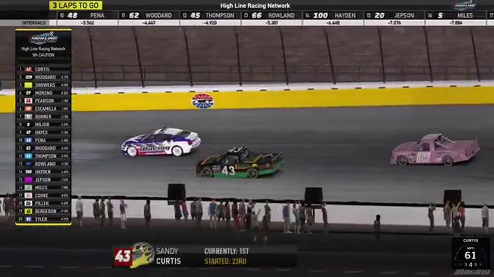

Sandy Curtis
Team assignment not stated in the structured owner record.
A PODIUM FILE WITH AN OPEN RESULT HORIZON
- Official files
- 2
- Central editions
- 0
- Exact tape cues
- 6
- Accepted podiums
- 1
Sandy Curtis has 1 position-specific top-three receipt: S1 R6 at Las Vegas (P3). No feature win is currently supported in the accepted result ledger. A consistently stated team affiliation remains open for owner review. The currently indexed source window runs from December 22, 2025 through December 29, 2025.
The official tape index connects the name to 2 race files, 0 Central editions, and 6 primary-broadcast navigation cues. The densest direct-tape categories are battle (1 cue) and restart (1 cue). Those counts describe where the name is easiest to find; they are not fault, pace, or performance grades. A source-attributed car frame is published with its original video and timestamp. That is the current discovery map for Sandy Curtis.
That is enough for a real result dossier without pretending the archive knows every start or finish. Owner classifications can extend the record later through the same stable race IDs. No Highline Live bonus file is currently attached to this identity. The displayed name is labeled broadcast lower third confirmed; that status remains visible so an owner roster can strengthen or correct the identity without rewriting the evidence trail. Those boundaries define Sandy Curtis's public HLRN file.
6 featured race-tape cues
These are discovery routes into complete HLRN broadcasts, not performance grades or inferred results.
- S1 / R6 · RESULT
Ethan Moreno is confirmed atop the Las Vegas results
The primary Las Vegas results readout records Ethan Moreno first, Justin Lee Pearson second, and Sandy Curtis third.
Las Vegas - S1 / R6 · FINISH
Ethan Moreno and Justin Lee Pearson enter the final-lap decision
S1 / R6 at 1:41:44: The white flag opens the final-lap decision at Las Vegas, with Ethan Moreno, Justin Lee Pearson, and Sandy Curtis named in the decisive group. The cut continues through the immediate finish call on the full primary broadcast.
Las Vegas - S1 / R6 · BATTLE
The Las Vegas lead pack goes three wide
S1 / R6 at 1:26:29: The Las Vegas pack compresses three wide while Cory Cook, Sandy Curtis, Nick Bowman, and Juan Escamilla are named on the call. The chapter keeps the live battle intact and makes no finishing-order claim.
Las Vegas - S1 / R6 · INTERVIEW
Ethan Moreno tells the winner's side
S1 / R6 at 1:57:49: Ethan Moreno, Justin Lee Pearson, Sandy Curtis, and Juan Escamilla join the HLRN booth for a first-person race account. The interview is preserved as context and does not create a placement claim outside the accepted result ledger.
Las Vegas - S1 / R6 · RESTART
Sandy Curtis and Randy Showers bring Las Vegas back to green
S1 / R6 at 1:31:32: Sandy Curtis, Randy Showers, Ethan Moreno, and Justin Lee Pearson are in the booth's front-pack call as Las Vegas returns to green. The cut keeps the restart launch and the first lap of lane development together.
Las Vegas - S1 / R6 · INCIDENT
Multi-lane contact brings the Las Vegas yellow
S1 / R6 at 1:36:51: The caution sequence centers the replay call on Ethan Moreno, Sandy Curtis, Justin Lee Pearson, and James Wood. This is a source-bounded incident window; it preserves what the booth reviews without assigning unsupported fault.
Las Vegas
Verified team history is not consistently stated. Complete starts, finishes, and points remain open beyond the recovered results. The public spelling has broadcast identity support; an owner roster can still add legal-name, number, and team-history detail.